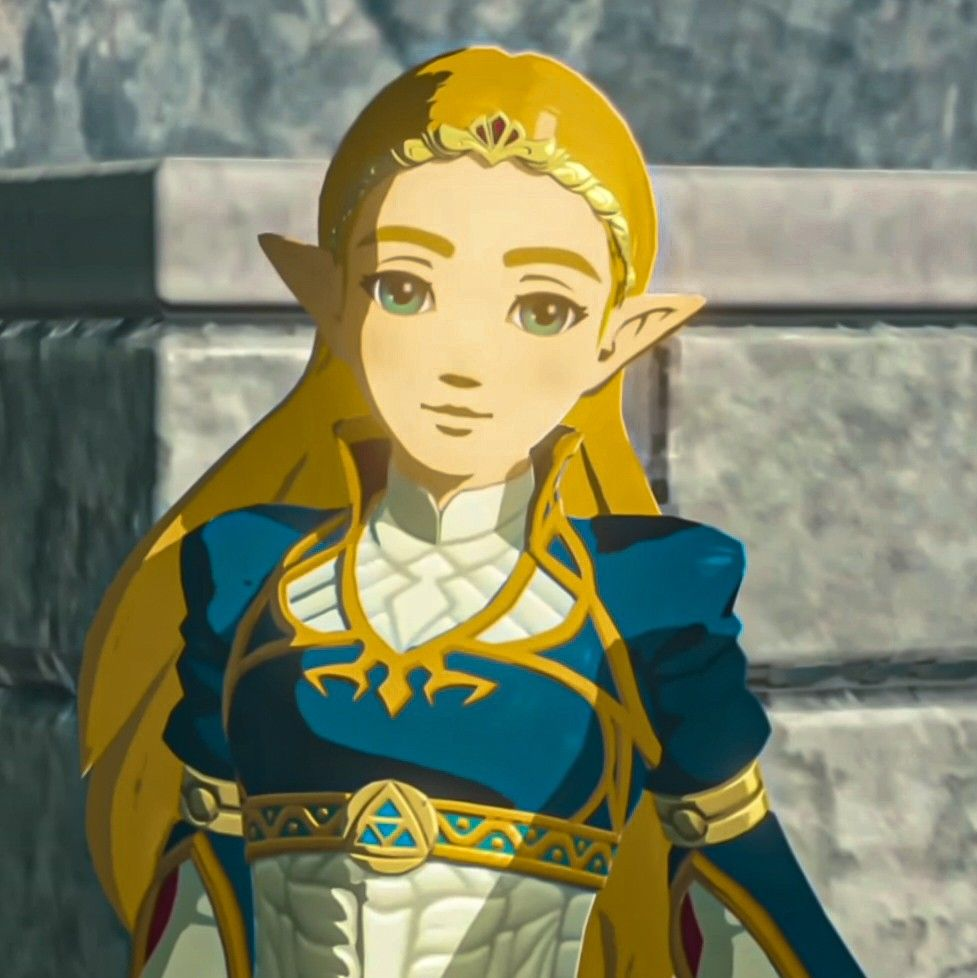

FILE 01 / CASE SUMMARY
Case Overview
One hundred years before the events of The Legend of Zelda: Breath of the Wild, the kingdom of Hyrule suffers a catastrophic attack known as the Great Calamity. Calamity Ganon returns and takes control of ancient technology, including the Guardians and Divine Beasts.
Princess Zelda attempts to awaken her sealing power while Link, her appointed knight, fights to protect her. Hyrule Castle falls, the Champions are defeated, and Zelda remains behind to contain Ganon.
This case file examines the people involved, the evidence left behind, and the chain of events that led to Hyrule's defeat. It also considers how Link and Zelda eventually confront the threat and begin restoring hope to the kingdom.
FILE 02 / PERSONS OF INTEREST
Key People
The following individuals played important roles in Hyrule's defense, the Great Calamity, or the events that followed. Select a name to review their role.

Princess Zelda
Role: Princess of Hyrule
Zelda researches ancient technology and attempts to awaken her sealing power to protect the kingdom.
Princess Zelda
Role: Princess of Hyrule
Zelda researches ancient technology and attempts to awaken her sealing power to protect the kingdom.
FILE 03 / EVIDENCE ARCHIVE
Evidence
Explore the artifacts, technology, and historical records that help explain Hyrule's defeat.
Guardian Machines
Evidence Type: Ancient Technology
Machines intended to defend Hyrule were corrupted and turned against the kingdom during the Great Calamity.
FILE 04 / CHRONOLOGY
Timeline of Events
Select an event to examine its significance in the fall and eventual recovery of Hyrule.
Preparation for Ganon's Return
Hyrule studies ancient technology and selects Champions to pilot the Divine Beasts in preparation for Ganon.
FILE 05 / TESTIMONY
Witness Accounts
These accounts summarize memories, records, and story events from the game. They are not verbatim quotations or real-world witness statements.
Zelda's Perspective
Zelda's recovered memories reveal her frustration with her inability to awaken her power and her determination to protect Link and Hyrule.
FILE 06 / ANALYSIS
Investigation Findings
What caused Hyrule's defeat?
Hyrule relied heavily on ancient technology to prepare for Ganon's return. When Ganon corrupted that technology, the kingdom's own defenses became a major threat. The loss of the Champions also left Hyrule without the protection it had expected from the Divine Beasts.
What role did Zelda's power play?
Zelda struggled to awaken her sacred power despite extensive research and training. During the Calamity, her power finally awakened, allowing her to confront Ganon and contain him while Link recovered.
Could the outcome have been different?
The story suggests that technological preparation alone was not enough. Hyrule's reliance on ancient weapons became a weakness when those weapons were corrupted. The outcome also depended on the Champions' defeat and Zelda's delayed awakening.
Final Assessment
The Great Calamity was a major failure of Hyrule's defenses against an enemy capable of turning the kingdom's technological advantages against it. Zelda's resistance preserved the possibility of defeating Ganon and restoring hope to Hyrule.
FILE 07 / CASE DISPOSITION
Case Status
Within Breath of the Wild, Link eventually confronts Calamity Ganon at Hyrule Castle. With Zelda's help, he defeats Ganon and brings the long struggle to an end. Hyrule begins looking toward recovery, although much of the kingdom remains affected by the Calamity.
FILE 08 / STUDENT REFLECTION
Reflection
1. Provide at least one prompt you used to build this case file.
Create a new HTML, CSS, and JS file all called casefile I want to do feature on the Fall of Hyrule that's featured in the game of Breath of the Wild. Include character profiles, evidence, and timeline events.
2. What did you change after the AI output?
I added in character profile photos so that it'd be easier to visualize the characters, I used a lot of the code that we learned from the earlier objects assignment and the part 1 to help guide me through that. I also added in a "sheikah" effect on the buttons to pay tribute to the actual gamepad used in the game. That function was created mostly through a bit of trial and error in vs code to get the right way for it to hover as well as codex to help trouble shoot when I couldn't get it to work. The third section was adding classification colors to the evidence items. That was work with codex to modify the evidence sections as well as playing around with hex codes and rgb numbers to get the right shade.
3. What did you learn about JavaScript objects?
They work very similarly to dictionaries in other languages such as python,where you have a key value pairs. You have a key to access a piece of information like a character's name, but the diference is that JavaScript uses curly brackets and properties while python uses square brackets and dictionaries.
4. During this project, did you see AI as a shortcut, a collaborator, or something else?
AI was used as a collaborator in this project, as it helped generate the initial structure and content, but I still needed to review and refine it such as doing corrections for file names.
5. After this project, what is a new boundary you would set for yourself OR a boundary you would remove when using AI?
I would set a boundary of how I name my files to ensure consistency and avoid confusion, as I had used the "images" folder to designate images used in part 1, and codex attempted to add a new folder also named images into the folder I was already working in. It's still not great at visualizing a lot of things, and makes all the created objects look very similar to one another without much creativity, but it helps to have a vision and apply that and have it as a baseline creation.